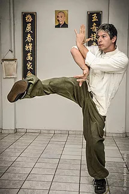

Chutes
Por Thomas Pinheiro
Ao contrário do que muitos praticantes de arte marcial pensam, o sistema Wing Chun não é um estilo exclusivamente de braços; o treinamento das pernas, e nisto inclui-se base, deslocamento, bloqueios e ataque, faz parte intensamente da prática rotineira de treinos. Vamos destacar as principais ideias quanto à utilização das pernas em ataques e defesas no sistema Wing Chun.
Chutes baixos atacam áreas vulneráveis e de difícil defesa, como juntas, área genital, plexo solar. As mãos auxiliam as pernas. Mantendo o controle do adversário com os braços, o praticante aumenta o equilíbrio corporal e, consequentemente, a potência do chute que irá desferir. Com os braços se obtêm, através da sensibilidade junto ao adversário informações para executar um ataque no flanco mais apropriado. As pernas devem proteger a linha central e, quando atacam, devem buscar a linha central do adversário no instante exato para a colocação do ataque.
Ataque com chutes de forma rotativa, alternando o alvo e a altura. A perna deve ser explosiva tal como o braço, força gerada pelas juntas e perfeito equilíbrio entre perna da base e da estrutura do tronco. Sem boa postura de perna há o comprometimento da efetividade dos chutes.
A postura deve servir como arma de ataque dos joelhos. Quanto menor o movimento do corpo ao chutar, menos visível será o ataque e, consequentemente, mais difícil de ser defendido pelo adversário. Qualquer movimento de ataque de perna pode ser utilizado como bloqueio, e vice versa. Os bloqueios de perna são utilizados contra ataques de perna até a cintura. O uso de joelhos não se limita a ser realizados com a perna erguida, há ataques de joelho mantendo os dois pés no chão (técnica denominada pik pó, comum a vários estilos do sul da China).
Com aparelhos treina-se com mook jongs, mui fah jong, saco de parede, saco de pancada etc... Também fazem parte os treinos de andadas, chutes no ar, aplicações com parceiro, e treinos em chi sau, denominado, quando do uso das pernas, chi gurk. O aprendizado de pernas em Wing Chun segue a progressão natural dos níveis de domínio da arte.